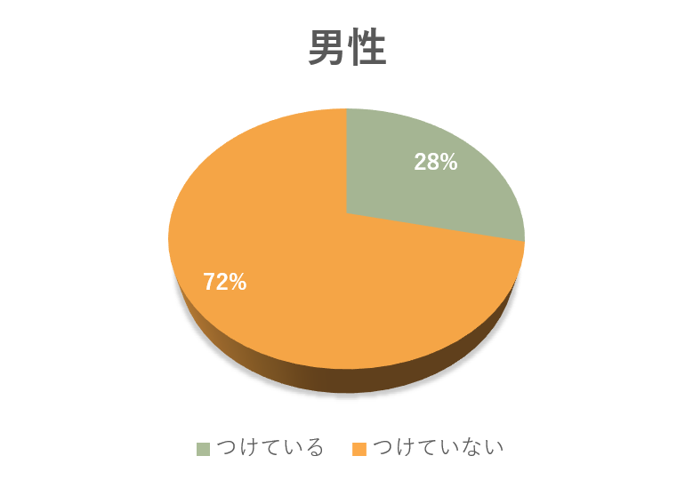
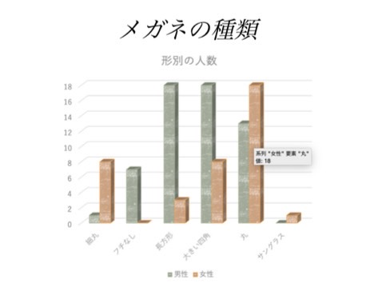

８班観察記録
フィールドワーク ８班
- ジャンル：衣
- テーマ ：メガネ
- 観察場所：キャンパス内１F~７F・キャンパス周辺・マークイズ前大通り
- 観察項目：男女別でのメガネの有無の比率、メガネの種類・形
- 理由 ：衣・食・住の中で「衣」を選んだ中で、他の班と被らずに、一目で見て分かるのがメガネかなと思ったから
- メンバー：Yurina, りんたろー, haru.ta, シンシン, Fuxase
［観察記録］
１．メガネの有無
男女各２００人を対象に観察した結果

２．メガネの種類

３．気付いたこと
- 年配の男性はフチなしメガネが多かった。
- 女性は年齢関係なく大きい四角や丸メガネをかけている人が多かった。
- 女子大生のメガネ率は低かった。
- データから、男性より女性のほうがかけているメガネのデザインに偏りがあった。